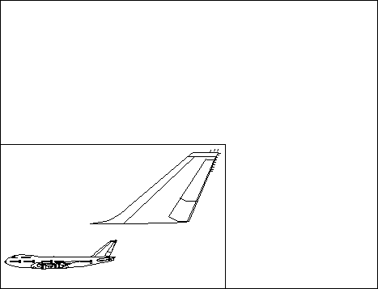

The PM automatically transforms the presentation-page contents to the area of the device space within the page viewport. The drawing is not clipped to the page viewport because this is a scaling transformation only. The entire picture is displayed, regardless of the size of the page viewport specified. The following figure shows the airplane presentation-page contents scaled to fit the page viewport.
Device Space
A page viewport smaller than the presentation page has been defined. The picture assembled in the presentation page is therefore scaled to fit the page viewport.
After transformation to device space, graphics coordinates must be in the range -32768 through +32767, even if the presentation page is defined in GPIF_LONG format. An attempt to address a coordinate outside this range results in a coordinate-overflow error. To determine if a graphics object will give an error, applications can do the following:
Remember that world-coordinate space has its own own limits:
Although applications can specify a page viewport of any size, the presentation page can be mapped only to an area equal to, or less than, the available device space. If an application specifies a viewport larger than the available device space, part of the presentation page contents are displayed outside the visible device output area. To find out the dimensions of the page viewport for the currently associated device, use GpiQueryPageViewport. Applications can store the dimensions of the current page viewport before changing them, and restore them later.